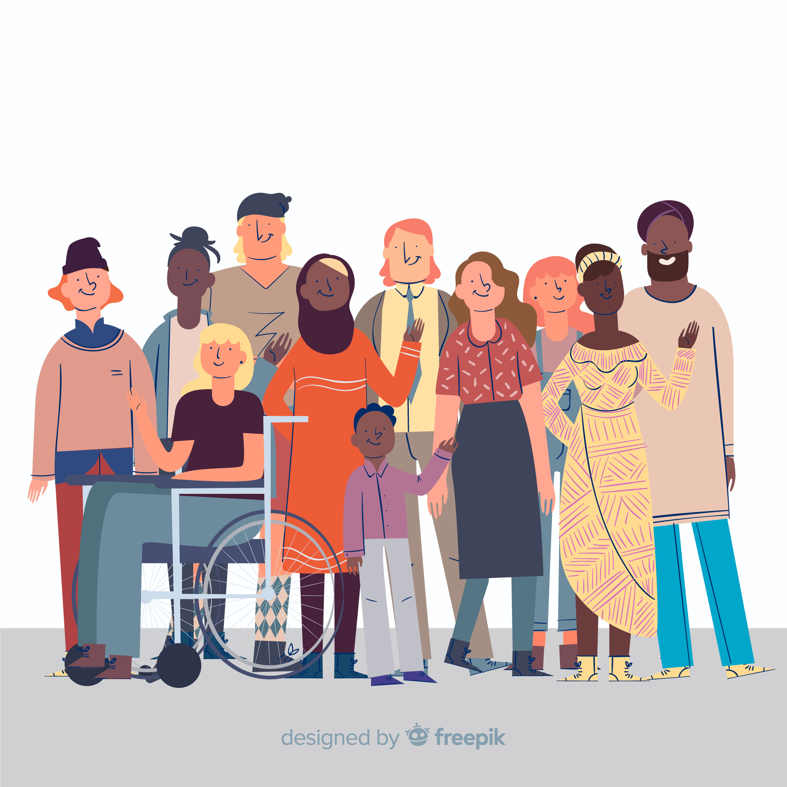
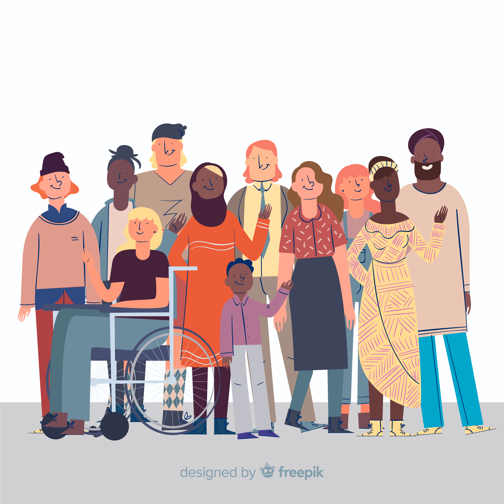

What is Social Health?

Social health refers to the ability of individuals to form and maintain positive, meaningful relationships with others, and to interact effectively within their community or society. It involves the capacity to engage in healthy social behaviors, establish a support network, and participate in social activities that foster a sense of belonging. Good social health contributes to emotional well-being, reduces feelings of loneliness and isolation, and improves overall mental and physical health by promoting positive interactions and communication. It is essential for coping with stress, enhancing self-esteem, and building resilience in both personal and community contexts..
Why is social Health Important
- Improves Mental Health
Strong social connections reduce stress, anxiety, and depression.
- Enhances Physical health
Studies show that good social relationships can boost immunity and longevity.
- Provides Emotional Support
Friends and family help us cope with challenges.
- Encourages Personal Growth
Social interactions develop communication skills, empathy, and confidence.
Factors That Influence Social Health
Social health refers to the ability to form meaningful relationships, interact positively with others, and maintain a support system. It affects our mental, emotional, and even physical well-being.
- Family and Upbringing
The way we are raised influences how we build relationships.
- Education and Environment
Schools and workplaces shape our social interactions. .
- Technology and Social-Media
Digital connections impact the way we communicate and socialize.
- Mental and Emotional Well-being
Anxiety, depression, and stress affect social engagement..
- Cultural and Social Norms
Different cultures have unique ways of interacting and forming relationships.
Tips to Maintain Good Social Health
Good social health is vital for mental, emotional, and physical well-being. Strong relationships reduce stress, boost self-esteem, and provide emotional support. Social connections promote happiness, personal growth, and better communication skills. Maintaining social health helps prevent loneliness, enhances resilience, and improves overall quality of life, leading to a happier and more fulfilling existence.

 

- Improves Mental Health
Strong social connections reduce stress, anxiety, and depression.
- Enhances Physical health
Studies show that good social relationships can boost immunity and longevity.
- Provides Emotional Support
Friends and family help us cope with challenges.
- Encourages Personal Growth
Social interactions develop communication skills, empathy, and confidence.